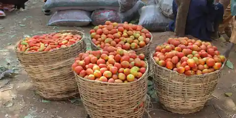

An insect-pollinated crop depends on an insect to move pollen between its flowers
An insect-pollinated crop depends on an insect to move pollen between its flowers; no arrangement of plants substitutes for one.
Well established A person has checked it against its sources. If you skip this, it still grows, just less well. The planner suggests it.
The line has a run for each of its 4 sources. Each one’s date is the day a person read it.
How to read this
- Each run of the line is one group, as long as its count.
- It is one line, wound from the middle out, in the order of the list.
How it works
A monoecious cucurbit bears pollen and ovules in separate flowers, so fertilization requires a vector to carry pollen between them. Neither wind nor self-fertility applies. Ovules that are not fertilized do not develop, and the fruit aborts or forms misshapen.
What to do about it
Nothing here can guarantee insects, and their absence cannot be diagnosed from a plant list. What you can change is whether anything in the garden is in flower while the crop is. Plants that feed insects near a fruiting crop are a reasonably supported suggestion. They are not a proven fix.
How much it matters: Not quantified by any source read. Clemson states the outcome categorically ("no fruit formation or either poorly formed fruit") without a rate, and no source read gives a visits-per-flower threshold or a yield curve. Deliberately left unquantified. No estimate is made.
The evidence
Evidence: checked against 4 sources in the research-based literature.
The 4 sources
Squash have separate male and female flowers on the same plant, and pollen must be transferred from the male flowers to the female flowers by bees.
An insect must move the pollen from the male flowers to the female flowers. Bees are common squash pollinators.
Pumpkins and squash are dependent upon insect pollination.
Summer squash flowers require insect pollination and are only open in the morning
Read next
 Why is my squash not setting fruit? Pollination for the home gardener
Why is my squash not setting fruit? Pollination for the home gardener Floating row covers: frost protection, pest exclusion, and the one rule
Floating row covers: frost protection, pest exclusion, and the one rule
Why won't my tomatoes set fruit? Heat, blossom drop, and the shade-cloth mistake
Photo credits
Why is my squash not setting fruit? Pollination for the home gardener. Photo: U.S. Department of Agriculture Lance Cheung/Multimedia PhotoJournalist · Public domain, via Wikimedia Commons.
Floating row covers: frost protection, pest exclusion, and the one rule. Photo: George Chernilevsky · Public domain, via Wikimedia Commons.
Why won't my tomatoes set fruit? Heat, blossom drop, and the shade-cloth mistake. Photo: Friday musa · CC BY-SA 4.0, via Wikimedia Commons.
.jpg){kind=link}


More ways Milpa can help
When do I plant? · What grows well together? · What can I plant now? · Something wrong in the garden? · Heard a tip?
With a free account: Plan your garden · Keep a garden diary
About this page
Cite this page
Milpa Gardens. “An insect-pollinated crop depends on an insect to move pollen between its flowers; no arrangement of plants substitutes for one.” Evidence grade: Well established. /rules/insect-pollinated-crop-depends-insect-move-pollen/
A garden planner built on graded evidence. Every claim states its evidence grade and links its sources on the page. Cite it with the grade, and add the date you read it.